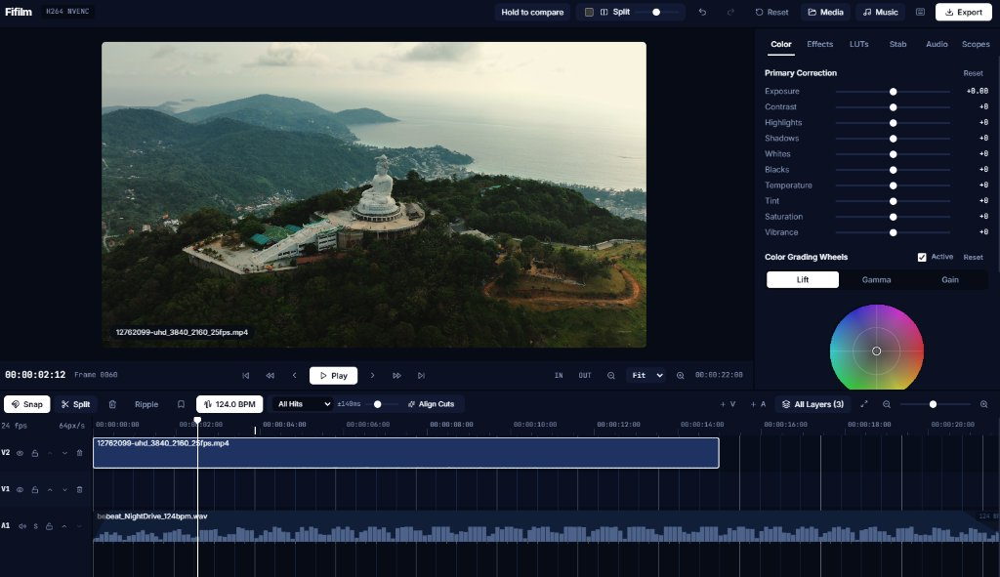

A hardware-accelerated desktop video editor for multi-layer compositing, cinematic colour grading, stacked 3D LUTs, and smooth two-pass stabilization, starting on a project home screen with recent projects, a built-in step-by-step guide, and auto-scaling sequence resolutions, plus blend modes, shape and HSL masks, keyframes, GPU effects and transitions, draggable clip fades, beat-synced seamless audio auto-mixing, full NLE trimming, live video scopes and loudness metering, and GPU-accelerated export.